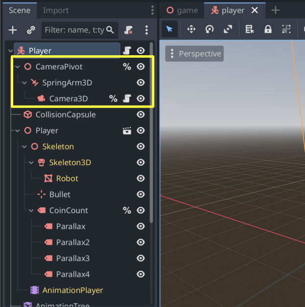
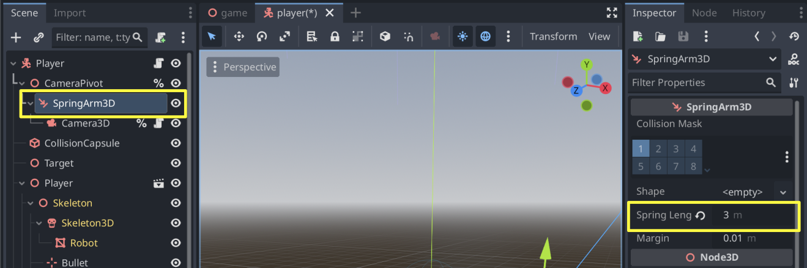

Lesson 03 · 65 minutes · Control layer
Make movement feel intentional.
Upgrade the basic player into a third-person controller that accelerates, jumps, turns toward motion, and keeps the camera from clipping through walls.
Scene structure
Separate physics, visuals, and viewpoint.
The root owns movement and collision. The Visual child turns without changing the collision body. SpringArm3D pulls the camera closer when a wall blocks its path.


Screenshots: Godot Engine documentation, © Juan Linietsky, Ariel Manzur and the Godot community, CC BY 3.0.
Responsive motion
Accelerate instead of snapping.
extends CharacterBody3D
@export var speed := 6.0
@export var acceleration := 18.0
@export var jump_velocity := 7.0
var gravity: float = ProjectSettings.get_setting("physics/3d/default_gravity")
func _physics_process(delta: float) -> void:
var input := Input.get_vector("move_left", "move_right", "move_forward", "move_back")
var direction := (transform.basis * Vector3(input.x, 0, input.y)).normalized()
velocity.x = move_toward(velocity.x, direction.x * speed, acceleration * delta)
velocity.z = move_toward(velocity.z, direction.z * speed, acceleration * delta)
if not is_on_floor(): velocity.y -= gravity * delta
if Input.is_action_just_pressed("jump") and is_on_floor(): velocity.y = jump_velocity
if input.length() > 0.1: $Visual.rotation.y = atan2(-input.x, -input.y)
move_and_slide()View control
Rotate a pivot, not the whole player.
Add camera_look as a mouse motion handler. Clamp vertical rotation so the camera cannot flip upside down.
@export var mouse_sensitivity := 0.002
@onready var camera_pivot: Node3D = $CameraPivot
func _ready() -> void:
Input.mouse_mode = Input.MOUSE_MODE_CAPTURED
func _unhandled_input(event: InputEvent) -> void:
if event is InputEventMouseMotion:
rotate_y(-event.relative.x * mouse_sensitivity)
camera_pivot.rotate_x(-event.relative.y * mouse_sensitivity)
camera_pivot.rotation.x = clamp(camera_pivot.rotation.x, -1.0, 0.6)
if event.is_action_pressed("ui_cancel"):
Input.mouse_mode = Input.MOUSE_MODE_VISIBLECoordinate check
Why transform the input?
transform.basis accomplish?Playtest
Tune one feeling at a time.
- Test stopping distance.Raise acceleration for crisp arcade control; lower it for slippery momentum.
- Test jump shape.Adjust jump velocity and gravity separately. Height and fall speed are different feelings.
- Test camera collision.Walk backward toward a wall and confirm SpringArm3D shortens instead of letting the camera pass through.
- Test recovery.Press Escape to release the mouse and confirm the player cannot double-jump.
Remix challenge
Add a sprint action. Hold Shift to multiply speed by 1.6, but only while the player is on the floor.
SignalRun_03_Controller.Your restore point must pass the wall-camera, single-jump, and stop-distance tests.Definition of done
Your controller works when…
0/4 checked
Evidence: Record one test showing turn-relative movement, one jump, a full stop, and camera collision.
Lesson 3 complete
Your project now feels like a game you can inhabit.